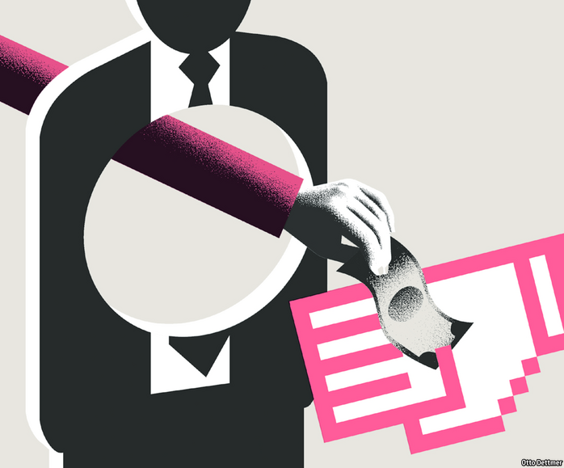

Text
2020-12-31T09:55:10+00:00
Free exchange
自由交流
自由交流
The disintermediation dilemma
脱媒困境
脫媒困境
Will central-bank digital currencies break the banking system?
央行数字货币会破坏银行系统吗？
央行數字貨幣會破壞銀行系統嗎？

IMAGINE IT IS 2035 and a financial crisis is raging. Credit is drying up; banks’ share prices look like ski slopes and every news report features sweaty traders in shirtsleeves tugging at their collars. You log on to your banking app and peer anxiously at your savings. You could transfer them to another bank, but none seems safe. Fuelling a traditional bank run by withdrawing physical banknotes, even if there were any branches left, would be tragically passé. Luckily, there is a new escape route. At the touch of a button, you can move your funds into a central-bank digital currency (CBDC), a government-issued virtual store of value that is completely safe.
想象现在是2035年，一场金融危机正在肆虐。信贷枯竭；银行的股价走势看起来就像滑雪场的陡坡，每则新闻报道都有脱了外套的交易员满头大汗地扯衬衫领子的照片。你登录你的银行应用，焦急地查看存款。你可以把钱转到另一家银行去，但似乎哪家都不安全。即使你还能找到实体网点，取出纸币、加剧银行挤兑这种传统方式也已经是极为过时的做法。幸好还有一条新的出路。只需点一下按钮，你就可以把资金转成央行数字货币（CBDC），这是政府发行的一种虚拟储值手段，绝对安全。
想象現在是2035年，一場金融危機正在肆虐。信貸枯竭；銀行的股價走勢看起來就像滑雪場的陡坡，每則新聞報道都有脫了外套的交易員滿頭大汗地扯襯衫領子的照片。你登錄你的銀行應用，焦急地查看存款。你可以把錢轉到另一家銀行去，但似乎哪家都不安全。即使你還能找到實體網點，取出紙幣、加劇銀行擠兌這種傳統方式也已經是極為過時的做法。幸好還有一條新的出路。只需點一下按鈕，你就可以把資金轉成央行數字貨幣（CBDC），這是政府發行的一種虛擬儲值手段，絕對安全。
This is one scenario worrying economists working on CBDCs (of whom there are many: a survey at the start of last year found that more than 80% of central banks were studying the subject). There are many potential advantages to publicly backed digital currencies. They might make payments easier. They might “democratise” central-bank money, the part of the central bank’s balance-sheet which, unlike physical cash, only banks can access now. And they would reduce the risk that cryptocurrencies replace government tender; bitcoin has been on a tear lately, and Facebook’s digital coin—which on December 1st changed its name from “Libra” to “Diem”—will reportedly launch in January. But wouldn’t CBDCs also make it dangerously easy to flee the banks in times of stress?
这是让研究CBDC的经济学家（为数众多，去年年初的一项调查发现超过八成央行正在研究CBDC）感到担忧的情形之一。政府背书的数字货币有许多潜在的优势。它们可能会让支付更便捷；可能会“民主化”央行资金，央行资产负债表的这一部分不同于实物现金，目前只有银行才能使用；并且将降低加密货币取代法币的可能。比特币近期表现强劲，Facebook据传将在1月推出数字货币（12月1日把名称从“Libra”改为“Diem”）。但在压力巨大的时期，CBDC难道不是极容易让资金逃离银行吗？
這是讓研究CBDC的經濟學家（為數眾多，去年年初的一項調查發現超過八成央行正在研究CBDC）感到擔憂的情形之一。政府背書的數字貨幣有許多潛在的優勢。它們可能會讓支付更便捷；可能會“民主化”央行資金，央行資產負債表的這一部分不同於實物現金，目前只有銀行才能使用；並且將降低加密貨幣取代法幣的可能。比特幣近期表現強勁，Facebook據傳將在1月推出數字貨幣（12月1日把名稱從“Libra”改為“Diem”）。但在壓力巨大的時期，CBDC難道不是極容易讓資金逃離銀行嗎？
It is not just in a crisis that CBDCs might compete with banks. They would be attractive assets to hold in normal times, too, especially if, like today’s central-bank money, they were a tool of monetary policy and therefore paid interest (assuming that rates are solidly positive again by 2035). Thus, commercial banks might be drained of the deposits with which they today fund their lending. Disintermediation of the banking system might make impossible the financial magic that allows households to pair long-dated mortgage borrowing with instantaneously redeemable deposits.
CBDC不仅仅可能在危机期间与银行竞争。它们在平时也会是有吸引力的资产，尤其如果它们也像今天的央行资金那样是货币政策工具而会产生利息的话（假设到2035年利率又会是稳稳地为正）。这样一来，商业银行如今用于放贷的存款可能会被抽干。银行体系的“脱媒”可能会让金融魔法无法施展，即无法再让家庭同时拥有长期抵押贷款和可即时赎回的存款。
CBDC不僅僅可能在危機期間與銀行競爭。它們在平時也會是有吸引力的資產，尤其如果它們也像今天的央行資金那樣是貨幣政策工具而會產生利息的話（假設到2035年利率又會是穩穩地為正）。這樣一來，商業銀行如今用於放貸的存款可能會被抽干。銀行體系的“脫媒”可能會讓金融魔法無法施展，即無法再讓家庭同時擁有長期抵押貸款和可即時贖回的存款。
The budding architects of CBDCs are looking for ways round the problem. One option, which has been suggested by researchers at the Bank of England and the European Central Bank, is to limit the amount that can be held in a CBDC. Another idea, pointed out in a recent paper by Sarah Allen of the Initiative for Cryptocurrencies and Contracts, a research group, and 12 co-authors, is to rely on banks to manage the public’s holdings of CBDCs, much as many people rely on “wallets” to hold their cryptocurrency (though if the public could not hold CBDCs directly, it would not be much of an improvement on existing central-bank digital money).
崭露头角的CBDC设计师们正在寻找解决这个问题的方法。英国央行和欧洲央行的研究人员提出了一种方法：限制能存在一种CBDC中的金额。研究小组加密货币和合约倡议组织（Initiative for Cryptocurrencies and Contracts）的萨拉·艾伦（Sarah Allen）和12位合著者近期在一篇论文中提出了另一个想法：依靠银行来管理公众持有的CBDC，就像许多人用“钱包”来装加密货币一样（不过如果公众不能直接持有CBDC，那么也就说不上对现有的央行数字货币有多少改进了）。
嶄露頭角的CBDC設計師們正在尋找解決這個問題的方法。英國央行和歐洲央行的研究人員提出了一種方法：限制能存在一種CBDC中的金額。研究小組加密貨幣和合約倡議組織（Initiative for Cryptocurrencies and Contracts）的薩拉·艾倫（Sarah Allen）和12位合著者近期在一篇論文中提出了另一個想法：依靠銀行來管理公眾持有的CBDC，就像許多人用“錢包”來裝加密貨幣一樣（不過如果公眾不能直接持有CBDC，那麼也就說不上對現有的央行數字貨幣有多少改進了）。
The problem of disrupting the banks may be avoidable with clever engineering. But it would be wise to consider whether it even needs avoiding in the first place. For those willing to entertain futuristic ideas, CBDCs may offer an opportunity to rethink the financial system from the ground up.
颠覆银行的问题或许可以通过巧妙的设计来避免。但明智之举是先考虑是否真的需要避免。对于那些愿意探讨一些未来主义思路的人，CBDC可能会提供一个彻底反思金融系统的机会。
顛覆銀行的問題或許可以通過巧妙的設計來避免。但明智之舉是先考慮是否真的需要避免。對於那些願意探討一些未來主義思路的人，CBDC可能會提供一個徹底反思金融系統的機會。
Several research papers, as summarised by Francesca Carapella and Jean Flemming of the Federal Reserve in a recent review, argue that central banks could preserve maturity transformation by reordering the chain of funding. Today, households deposit money at banks, which park funds at the central bank. If people prefer CBDCs, however, the central bank could in effect pass their funds on to banks by lending to them at its policy interest rate. “The issuance of CBDC would simply render the central bank’s implicit lender-of-last-resort guarantee explicit,” wrote Markus Brunnermeier of Princeton University and Dirk Niepelt of Study Centre Gerzensee in a paper in 2019. Explicit and, perhaps, in constant use.
有几篇研究论文认为央行可以通过对融资链重新排序来保留期限转换。美联储的弗朗西斯卡·卡拉佩拉（Francesca Carapella）和让·弗莱明（Jean Flemming）最近在一篇评述中对这些论文做了总结。如今，家庭把钱存入银行，银行把资金存入央行。但如果人们更喜欢CBDC，那么央行实际上可以按政策利率向银行放贷，以此把这些资金转给银行。“CBDC的发行只会让央行隐性的最后贷款人担保显性化。”普林斯顿大学的马库斯·布伦纳迈尔（Markus Brunnermeier）和格岑赛研究中心（Study Centre Gerzensee）的德克·尼佩尔特（Dirk Niepelt）在2019年的一篇论文中写道。不仅会显性化，而且可能会被经常使用。
有幾篇研究論文認為央行可以通過對融資鏈重新排序來保留期限轉換。美聯儲的弗朗西斯卡·卡拉佩拉（Francesca Carapella）和讓·弗萊明（Jean Flemming）最近在一篇評述中對這些論文做了總結。如今，家庭把錢存入銀行，銀行把資金存入央行。但如果人們更喜歡CBDC，那麼央行實際上可以按政策利率向銀行放貸，以此把這些資金轉給銀行。“CBDC的發行只會讓央行隱性的最後貸款人擔保顯性化。”普林斯頓大學的馬庫斯·布倫納邁爾（Markus Brunnermeier）和格岑賽研究中心（Study Centre Gerzensee）的德克·尼佩爾特（Dirk Niepelt）在2019年的一篇論文中寫道。不僅會顯性化，而且可能會被經常使用。
More central-bank lending might sound like an unwarranted expansion of government. But today’s market for deposits is hardly laissez-faire. It is not as if households inspect banks’ loan books before entrusting them with cash; they rely on the backstop of government-provided deposit insurance. And deposits are increasingly concentrated in big banks. (In fact, a recent working paper by researchers of the Bank of Canada finds that, by increasing competition for deposits, a CBDC could increase bank lending and GDP.)
央行放贷增多听起来可能像政府在无端扩张。但如今的存款市场也并非自由放任。家庭在将现金托付给银行之前并不会先检查银行的贷款登记簿，但它们有政府提供的存款保险作为后盾。而且，存款越来越集中在大型银行中。（实际上，加拿大央行的研究人员最近的一篇工作论文发现，通过增加对存款的竞争，CBDC也许能增加银行放贷和GDP。）
央行放貸增多聽起來可能像政府在無端擴張。但如今的存款市場也並非自由放任。家庭在將現金託付給銀行之前並不會先檢查銀行的貸款登記簿，但它們有政府提供的存款保險作為後盾。而且，存款越來越集中在大型銀行中。（實際上，加拿大央行的研究人員最近的一篇工作論文發現，通過增加對存款的競爭，CBDC也許能增加銀行放貸和GDP。）
The real problem with central-bank financing of banks is the risk of default. To avoid picking winners, policymakers would probably need to fund any institution that can provide satisfactory collateral. Determining which loans and other assets qualify is uncomfortable work. But central banks already make such evaluations in times of crisis. The understanding that they will accept only high-quality assets, plus minimum equity requirements to protect creditors, is supposed to prevent moral hazard.
央行为银行融资的真正问题是违约风险。为了避免出现挑选赢家的情况，决策者可能需要资助任何能提供满意抵押品的银行。确定哪些贷款和其他资产合格是个棘手的活儿。但央行在危机时期已经在做这样的评估。明白央行只接受高质量资产，外加设定最低股本要求以保护债权人，应该可以防范道德风险。
央行為銀行融資的真正問題是違約風險。為了避免出現挑選贏家的情況，決策者可能需要資助任何能提供滿意抵押品的銀行。確定哪些貸款和其他資產合格是個棘手的活兒。但央行在危機時期已經在做這樣的評估。明白央行只接受高質量資產，外加設定最低股本要求以保護債權人，應該可以防範道德風險。
Carpe diem
把握时机
把握時機
Another idea is to make banks fund themselves with much more equity, rather than rely on deposits. That would make them look more like today’s mutual funds or other unleveraged investment vehicles. This is precisely what economists such as John Cochrane of Stanford University and Laurence Kotlikoff of Boston University have long advocated: that lenders should shed their dependence on flighty sources of financing, and that households’ funds should instead be parked in completely safe assets. For Mr Cochrane, CBDCs are an opportunity to pursue such “narrow banking”.
另一种想法是让银行大幅扩充股本为自己筹集资金，而不是依靠存款。那会让它们看起来更像现在的共同基金或其他无杠杆投资工具。这正是斯坦福大学的约翰·科克伦（John Cochrane）和波士顿大学的劳伦斯·科特利科夫（Laurence Kotlikoff）等经济学家长期以来的主张：银行应避免依赖不稳定的融资来源，而家庭存款应该放在完全安全的资产上。在科克伦看来，CBDC提供了发展这种“狭义银行业务”的机会。
另一種想法是讓銀行大幅擴充股本為自己籌集資金，而不是依靠存款。那會讓它們看起來更像現在的共同基金或其他無槓桿投資工具。這正是斯坦福大學的約翰·科克倫（John Cochrane）和波士頓大學的勞倫斯·科特利科夫（Laurence Kotlikoff）等經濟學家長期以來的主張：銀行應避免依賴不穩定的融資來源，而家庭存款應該放在完全安全的資產上。在科克倫看來，CBDC提供了發展這種“狹義銀行業務”的機會。
To fear disintermediation at the hands of CBDCs is to believe that narrow banking would starve the economy of something it needs, and that today’s “fractional-reserve” system must be preserved. But banks are not necessary for lending and borrowing to take place—in America a high share of this activity takes place in capital markets instead. If bank credit must be kept flowing, governments could subsidise it directly—making explicit what today’s architecture obscures. Better that than suppressing useful technological innovations.
担心CBDC会导致银行脱媒，就是认为狭义的银行业务会让经济无法获得它需要的东西，以及必须保留现今的“部分准备金”制度。但借贷并不一定要通过银行发生——美国很大一部分借贷活动都发生在资本市场。如果必须要保持银行信贷的流通，政府可以直接补贴银行——把当今架构中模糊不清的地方明示出来。那样总比抑制有用的技术创新来得好。
擔心CBDC會導致銀行脫媒，就是認為狹義的銀行業務會讓經濟無法獲得它需要的東西，以及必須保留現今的“部分準備金”制度。但借貸並不一定要通過銀行發生——美國很大一部分借貸活動都發生在資本市場。如果必須要保持銀行信貸的流通，政府可以直接補貼銀行——把當今架構中模糊不清的地方明示出來。那樣總比抑制有用的技術創新來得好。
Making subsidies explicit, however, is not always comfortable for the beneficiaries—or for regulators; obvious support attracts more public opprobrium. The real risk of CBDCs to the financial system may be that they eventually precipitate a new kind of run: on the idea that banks need to exist at all. ■
但对受益人或监管机构而言，明示补贴并不总是件轻松的事。毫不遮掩的支持会引来更多的公众指责。CBDC对金融系统的真正风险可能是它们最终会引发一种新型挤兑，因为人们将质疑银行存在的必要性。
但對受益人或監管機構而言，明示補貼並不總是件輕鬆的事。毫不遮掩的支持會引來更多的公眾指責。CBDC對金融系統的真正風險可能是它們最終會引發一種新型擠兌，因為人們將質疑銀行存在的必要性。